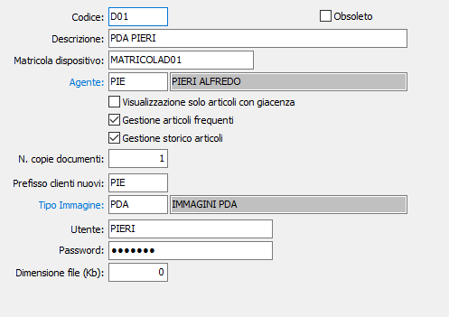

Dispositivi
La procedura consente di codificare i dispositivi remoti su cui è installata la procedura OS1Mobile per il successivo scambio dati.

Deve essere inserito un codice dispositivo univoco per ogni dispositivo utilizzato, una descrizione ed una matricola.
AGENTE: indicare il codice agente, presente in anagrafica agenti, che sarà associato al dispositivo; l'associazione è essenziale, perchè tramite tutta la movimentazione che sarà importata dal dispositivo sarà imputata all'agente.
Attivando il parametro ASSEGNAZIONE AUTOMATICA LOTTO, se attiva la gestione dei lotti, si indica alle procedure documentali presenti sul dispositivo che per gli articoli gestiti a lotti deve essere effettuata una selezione automatica del lotto, in base a quanto espresso sull'anagrafica dell'articolo stesso. Se il parametro non è attivo la selezione sarà manuale.
Attivando il parametro VISUALIZZAZIONE SOLO ARTICOLI CON GIACENZA, come lascia intendere la stessa opzione, si indica alla procedura presente sul dispositivo di visualizzare negli zoom dei prodotti solo quelli con giacenza positiva.
Attivando il parametro Gestione articoli frequenti sarà inviato al dispositivo l’elenco degli articoli venduti (per ciascun cliente e per ogni articolo vengono inviati i dati dell’ultima vendita). Tale meccanismo consente all’interno di OS1Mobile l’inserimento rapido di nuovi documenti
Attivando il parametro Gestione storico articoli sarà inviato al dispositivo il dettaglio dei documenti di vendita. Tale meccanismo consentirà all’agente di effettuare, in autonomia, l’analisi delle vendite. Attenzione: la mole di dati inviati in questo caso potrebbe essere significativa e dare luogo quindi a rallentamenti nella fase di ricezione dati da parte del dispositivo.
E' possibile indicare il numero di copie di default del documento da stampare, il prefisso da utilizzare per l'inserimento dei nuovi clienti (se è configurata tale prestazione) ed il tipo immagine in base alla tabella Tipi immagini, che indica la tipologia e la dimensione dell'immagine; l’utente e la password qui inserite sono quelle che saranno utilizzate come credenziali di accesso al programma OS1Mobile presente sul dispositivo; inoltre è possibile specificare la dimensione massima, in Kb, di ciascun file che sarà inviato al dispositivo; nel caso questo valore sia zero sarà inviato un unico file.